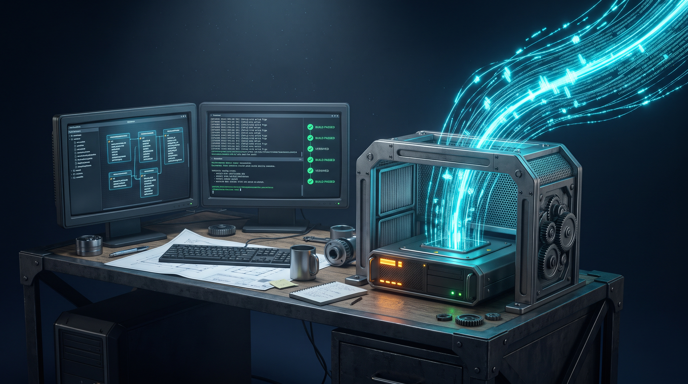

A Ilusão da Velocidade: O Desafio do DeepSeek Flash v4 e a Engenharia Real do CaraCore Hub
O código corre no vento, veloz como um lampejo,
a IA cospe funções atendendo ao meu desejo.
Mas quando a linha se assenta no chão de pedra e cimento,
não há lampejo que salve o que faltou de fundamento.
O SQLite pede ordem, o gate barra a ilusão,
não basta parecer certo, tem que haver validação.
Entre a pressa do modelo e o rigor do arquiteto,
só passa o que for provado no balcão que é concreto.
O rugido do motor sintético
Nas últimas semanas, colocamos no centro de nossa bancada de desenvolvimento uma das novidades mais comentadas do ecossistema de inteligência artificial: o DeepSeek Flash v4 (operado via interface NVIDIA NIM e integrado diretamente aos nossos agentes de codificação). A promessa é vertiginosa: geração quase instantânea de centenas de tokens por segundo, cadeias de raciocínio lógico aceleradas e a capacidade de digerir árvores inteiras de código para propor refatorações complexas num piscar de olhos.
Para quem observa da superfície, parece o apogeu da produtividade. Métodos de cinquenta linhas surgem em três segundos; classes controladoras, mapeamentos REST e scripts de teste emergem na tela com elegância visual e sintaxe perfeita. Porém, o laboratório onde essa força foi testada não era um projeto acadêmico ou uma página descartável. O campo de prova foi o CaraCore Hub — nossa aplicação desktop de integração multicanal, construída para operar localmente em solo comercial, sobre uma base sólida em Java 25, Tomcat 10.1 embutido, interface empacotada em Electron 35 e um motor de persistência em SQLite com modo WAL.
Foi nesse encontro entre o mundo do raciocínio sintético acelerado e a realidade empírica de um produto com mais de uma década de regras acumuladas que aprendemos uma lição definitiva: a velocidade da IA é proporcional ao perigo de acumular dívidas técnicas invisíveis se a arquitetura não dispuser de freios de aço.
As quatro armadilhas da pressa algorítmica
Ao delegar tarefas ao DeepSeek Flash v4 durante a Sprint 6 do Hub — rumo à nossa pré-release v2.1.0-rc1.6 —, testemunhamos em primeira mão os padrões onde o raciocínio puramente probabilístico dos modelos tropeça na física dos sistemas reais. Identificamos quatro armadilhas clássicas que merecem registro minucioso:
1. A serialização invisível e o gate estático
Em uma das tarefas de infraestrutura administrativa, pedimos ao modelo a criação de uma rotina de acompanhamento de backups com diagnóstico de integridade. A IA rapidamente sintetizou um servlet funcional e um objeto de estado. Em testes rápidos de navegador, tudo funcionou perfeitamente. No entanto, ao submeter o código ao nosso gate de análise estática (SpotBugs), a compilação foi sumariamente interrompida com o alerta J2EE_STORE_OF_NON_SERIALIZABLE_OBJECT_INTO_SESSION em BackupAdminServlet.
A IA havia armazenado diretamente na sessão HTTP do Tomcat um objeto que não implementava java.io.Serializable. Para um modelo treinado com amostras genéricas da web, isso é um detalhe irrelevante. Para um runtime em produção, onde sessões podem ser persistidas ou recicladas sob baixa memória, trata-se de uma bomba-relógio silenciosa. Apenas a obrigatoriedade de passar por análise estática estrita impediu que o código plausível virasse falha operacional.
2. O falso teste verde que valida a própria mentira
O desafio mais insidioso ocorreu na implementação da auditoria de ações de usuários. O DeepSeek Flash v4 desenhou o serviço, estruturou os eventos e escreveu uma suíte de testes unitários brilhante. Todos os testes unitários passaram com louvor. Qualquer desenvolvedor desatento assinaria o commit naquele instante.
Contudo, ao rodar nosso orquestrador contra o banco de dados real em arquivo local, descobrimos que a tabela usuario_auditoria sequer existia nas migrações ativas do Flyway (estava esquecida em um script V6 arquivado). O código da IA simplesmente capturava a exceção de banco de dados em um bloco catch genérico, emitia um log silencioso e devolvia um redirecionamento HTTP 302 de sucesso. Ou seja: os testes do modelo validavam a própria suposição sintética, enquanto na prática nenhuma auditoria estava sendo gravada em disco. Tivemos que reescrever a migração (agora V18__cria_usuario_auditoria.sql), arrancar o silenciamento de exceções e instituir que falhas de auditoria interrompam a transação com severidade.
3. A tela órfã e a ilusão do Playwright
Outra façanha curiosa: o modelo construiu com perfeição a interface administrativa de auditoria (/admin/auditoria), consumindo a nova API protegida e renderizando tabelas ricas. Nossos testes end-to-end com Playwright navegaram diretamente para a URL, autenticaram como administrador e atestaram: 61 verificações aprovadas, zero falhas.
Mas havia um detalhe tragicômico: ninguém no mundo real conseguiria acessar aquela tela. A IA havia esquecido de incluir o link no menu de navegação da aplicação (navbar.jsp). Um usuário humano só chegaria lá se digitasse o endereço manualmente na barra do navegador. O harness automatizado comemorava sucesso absoluto enquanto a funcionalidade permanecia órfã de interface. Esse episódio gerou uma regra imediata em nosso ecossistema: o teste automatizado agora é obrigado a verificar a presença física do link na árvore DOM do menu antes de declarar a tela homologada.
4. O falso paralelismo sobre o arquivo SQLite
IAs modernas adoram sugerir pools de concorrência com threads virtuais e execuções paralelas agressivas. Quando solto sobre o banco de dados do Hub, o modelo tentou paralelizar gravações de sincronização de pedidos e filas de webhook como se estivesse lidando com um cluster distribuído de PostgreSQL na nuvem. O resultado imediato no ambiente local foi uma tempestade de erros SQLITE_BUSY.
O SQLite em modo WAL suporta leituras concorrentes infinitas, mas a escrita no arquivo único exige filas orquestradas e respeitosas. Tivemos que enquadrar a IA para trabalhar sob a disciplina do HikariCP com timeouts calibrados e locks explícitos na camada de domínio, preservando a integridade física do banco no computador do lojista.
- O ciclo de vida do container: o Tomcat possui padrões de inatividade (timeout de 30 min) e restrições de sessão que códigos avulsos ignoram.
- A persistência física: mocks não sofrem com contenção de I/O em disco, tabelas ausentes ou migrações corrompidas de Flyway.
- A experiência real de navegação: um endpoint HTTP 200 não tem valor comercial se o operador de caixa não tiver um botão para clicar.
- A integridade da cadeia de custódia: declarar que uma versão está "pronta" exige SHA-256 verificado, árvore limpa no Git e paridade de binários.
Os 2.555 fiscais: a muralha do verify
Para que a velocidade do DeepSeek Flash v4 pudesse ser aproveitada como alavanca de engenharia — e não como fábrica de desastres —, submetemos todo e qualquer artefato gerado à esteira de validação do Hub: o comando npm run verify, que executa seis gates inegociáveis (E1 a E6):
- Gate E1 (A Suíte Completa): 2.555 testes automatizados em Java 25 cobrindo
core,persistence,apieweb, com zero falhas permitidas e sem contagens infladas por relatórios órfãos. - Gate E2 (O Choque do SQLite Real): testes de integração disparados contra um banco SQLite real em disco, exercitando concorrência, migrações do zero e ausência de deadlocks.
- Gate E3 (Validação Prévia de Telas): pré-compilação obrigatória de todos os 78 arquivos JSP via
jspce validação rigorosa de sintaxe EL (Expression Language), impedindo erros 500 em tempo de execução. - Gate E4 (Sondas HTTP e RBAC Estrito): validação de 21 rotas anônimas bloqueadas com HTTP 401 padronizado em JSON e verificação da matriz de privilégios (perfil OPERADOR recebendo 403 em endpoints restritos enquanto ADMIN recebe 200).
- Gate E5 (Playwright no Binário Empacotado): simulação ponta a ponta controlando o aplicativo final empacotado em Electron, garantindo subida do Tomcat, autenticação e fechamento limpo de processos sem processos órfãos.
- Gate E6 (Análise Estática e Vulnerabilidades): SpotBugs configurado para barrar qualquer violação de nível alto/médio e OWASP Dependency-Check com triagem ativa de dependências.
Somente quando a execução atinge promotable=true, com dirtyEntries=0 na árvore do Git e 17 minutos de conferências ininterruptas, um pacote é considerado elegível para teste de empacotamento.
Software honesto não aceita atalhos
Essa disciplina nos permitiu entregar a pré-release CaraCore Hub v2.1.0-rc1.6 com uma postura que destoa do ruído habitual da indústria de software. Enquanto o mercado frequentemente maquia protótipos de IA como "produtos prontos", nós fomos na direção contrária:
Removemos do runtime empacotado todas as rotas legadas de teste (como test.jsp e a aplicação ROOT padrão do Tomcat). Travamos no código os canais de marketplace que ainda não possuem integração física com webhooks reais (como Amazon e B2W), em vez de exibir logotipos falsos na vitrine da versão Free. E, acima de tudo, publicamos a versão como Pré-release não homologada, mantendo nosso compromisso formal de que o General Availability (GA) estável só será declarado em 06 de abril de 2027, após exaustivas rodadas de homologação física e decisões definitivas sobre assinatura digital.
A divergência que encontramos entre a promessa da loja e a ausência do link de menu na interface já está documentada com transparência e endereçada para a próxima iteração técnica (rc1.7). Software honesto não esconde suas costuras; ele as mede e as corrige com serenidade.
O modelo corre, o arquiteto ancora
Nossa experiência de trabalho duro com o DeepSeek Flash v4 no CaraCore Hub nos deixa uma conclusão clara sobre o futuro do desenvolvimento: a inteligência artificial acelerou a escrita do código, mas elevou a importância da arquitetura a um patamar nunca antes visto.
Um modelo veloz sem governança é como um motor de fórmula 1 instalado sobre um chassi de madeira: na primeira curva fechada de concorrência ou segurança, a estrutura se esfacela. Quando, no entanto, enquadramos essa mesma IA dentro de contratos de erro imutáveis (como nosso ContratoDeErro), baterias determinísticas de testes e bancos locais soberanos, ela se torna um instrumento espetacular de lapidação técnica.
O DeepSeek Flash v4 é um estagiário genial que digita a mil palavras por minuto, mas que não tem a menor noção de por que um comerciante no interior do Paraná não pode ter seu banco de dados travado em um sábado de chuva. O estagiário gera as alternativas; cabe ao arquiteto humano manter as mãos no leme, estabelecer os limites de segurança e responder por cada byte que chega ao computador do cliente.
Hashtags
Contato e Links
- Loja do Hub: hub.caracore.com.br
- Empresa: Cara Core Informática
- E-mail: suporte@caracore.com.br
- LinkedIn: Cara Core Informática
Desenvolver com honestidade é medir os limites da máquina e nunca terceirizar a responsabilidade do arquiteto.
Conhecer a Loja do CaraCore Hub
Artigo publicado em 28 de julho de 2027
© 2027 Cara Core Informática. Todos os direitos reservados.